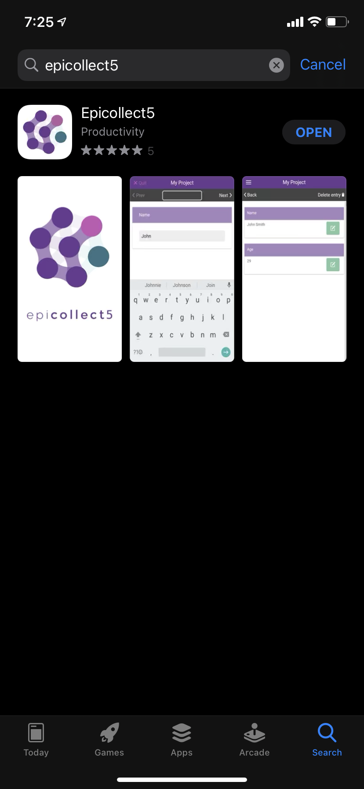
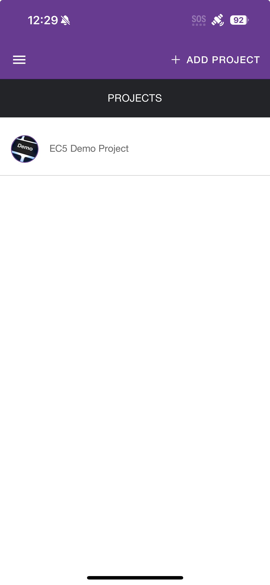
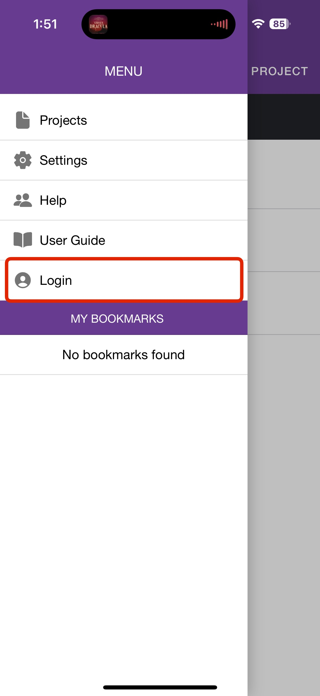
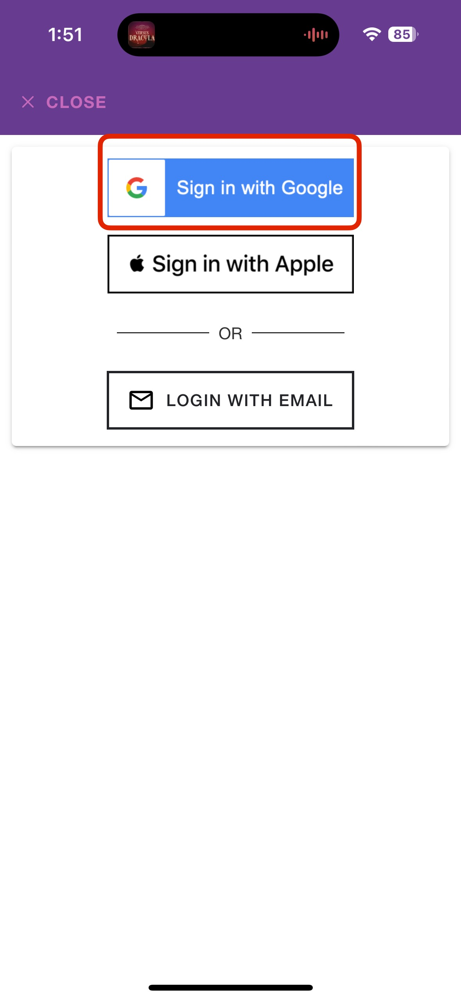
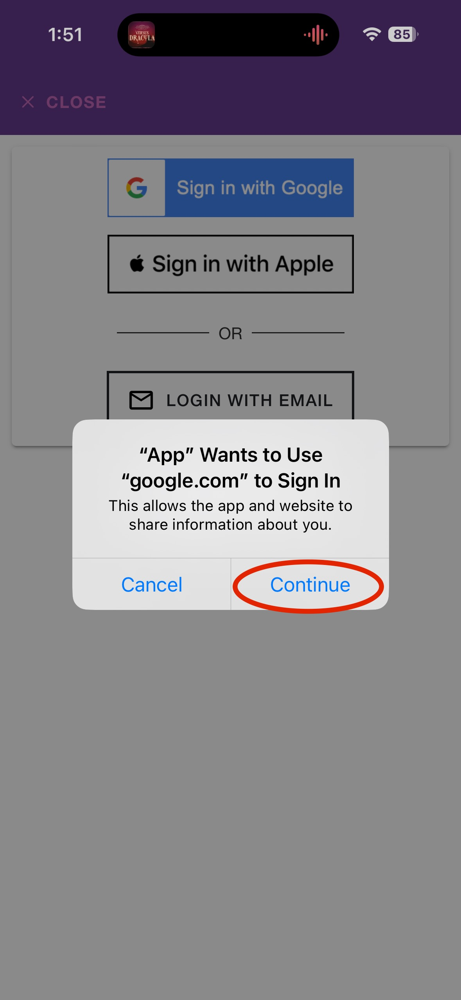
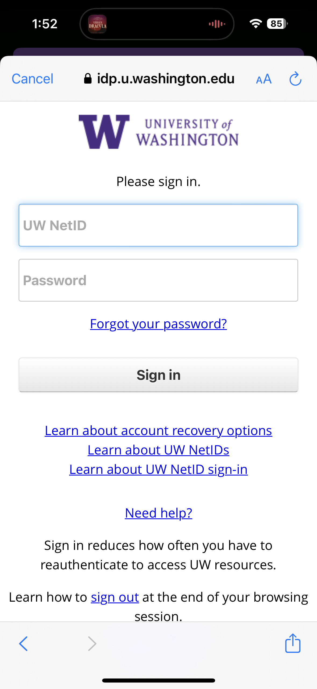
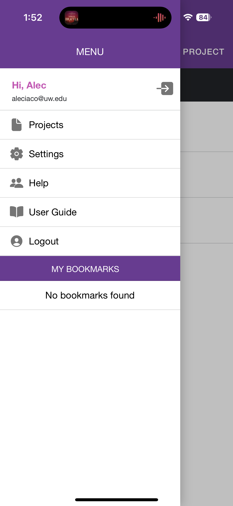
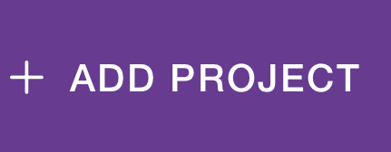
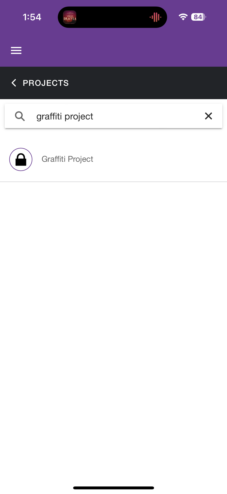

Project Application#
By Alec Iacobucci
Installing Epicollect and Joining the Graffiti Project#
This guide will take you through the steps necessary to collect data for the graffiti project.
Note
This is how all of your weekly homework assignments will be submitted, so it is of the utmost importance that you make sure you are registered and signed into the application.
Here are the steps:
Activate Google Suite
Download and install Epicollect5
Login to Epicollect5 using your UW netid
Add the Graffiti Project to your app
Step 0 - Making sure you are registered for UW Google Suite#
If you are new to UW or have not had to activate your GSuite for other reasons, you need to do that now!
To activate your UW Google account, follow these steps:
Go to the Manage UW Google page to activate the service and set your UW Google password. Once activated, your Google login is your_uwnetid@uw.edu (where your_uwnetid is your actual UW NetID).
If you want to forward your email to UW Gmail, use the UW NetID manage page and select “Forward to UW Google”. If you want to use Google without using Google’s email service, you can skip this step. Note to UW Medicine workforce members: You are prohibited from forwarding email to UW Google, as it is not HIPAA compatible. For more information on this policy, please contact comply@uw.edu
Step 1 - Installing Epicollect5#
Epicollect5 is available for free on both Apple and Android devices via the App Store and Google Play Store. Search for it, download it and install it.
{kind=link}
Activate Google Suite
Step 2 - Logging into Epicollect5 with your UW credentials#
When opening Epicollect5 for the first time you should see something like this:1.
{kind=link}
On the left side of the screen, tap the hamburger button to open the menu
{kind=link}
Select login
{kind=link}
Select Sign in with Google
{kind=link}
Select Continue
{kind=link}
Using your UW netid and password, log in to Epicollect5
{kind=link}
You should now see your name, welcoming you to the app
{kind=link}
1 I will be using the Apple version for these screenshots, but it should be almost identical for Android/Google devices. Ask the TA if there are any difficulties
Login to Epicollect5 using your UW netid
Step 3 - Adding the Graffiti Project to Epicollect5#
Click on Add Project at the top right of your screen
{kind=link}
Type in Graffiti Project in the search bar- your UW netid should already be registered from the course roster: if you are unable to successfully add this project please let your TA or Professor know ASAP
{kind=link}
Add the Graffiti Project to your app